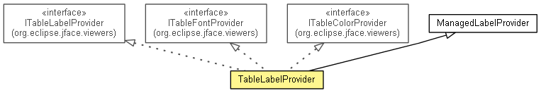

org.eclipse.net4j.util.ui
Class TableLabelProvider<T>
java.lang.Object
 org.eclipse.core.commands.common.EventManager
org.eclipse.jface.viewers.BaseLabelProvider
org.eclipse.jface.viewers.LabelProvider
org.eclipse.net4j.util.ui.ManagedLabelProvider
org.eclipse.net4j.util.ui.TableLabelProvider<T>
org.eclipse.core.commands.common.EventManager
org.eclipse.jface.viewers.BaseLabelProvider
org.eclipse.jface.viewers.LabelProvider
org.eclipse.net4j.util.ui.ManagedLabelProvider
org.eclipse.net4j.util.ui.TableLabelProvider<T>
- All Implemented Interfaces:
- IBaseLabelProvider, ILabelProvider, ITableColorProvider, ITableFontProvider, ITableLabelProvider
- public class TableLabelProvider<T>
- extends ManagedLabelProvider
- implements ITableLabelProvider, ITableColorProvider, ITableFontProvider

- Since:
- 3.3
| Methods inherited from class java.lang.Object |
clone, equals, finalize, getClass, hashCode, notify, notifyAll, toString, wait, wait, wait |
TableLabelProvider
public TableLabelProvider()
addColumn
public TableLabelProvider<T> addColumn(TableLabelProvider.Column<T> column)
isHeaderVisible
public boolean isHeaderVisible()
setHeaderVisible
public TableLabelProvider<T> setHeaderVisible(boolean headerVisible)
isLinesVisible
public boolean isLinesVisible()
setLinesVisible
public TableLabelProvider<T> setLinesVisible(boolean linesVisible)
removeColumn
public TableLabelProvider.Column<T> removeColumn(int columnIndex)
getColumn
public TableLabelProvider.Column<T> getColumn(int columnIndex)
getColumnText
public String getColumnText(Object element,
int columnIndex)
- Specified by:
getColumnText in interface ITableLabelProvider
getColumnImage
public Image getColumnImage(Object element,
int columnIndex)
- Specified by:
getColumnImage in interface ITableLabelProvider
getForeground
public Color getForeground(Object element,
int columnIndex)
- Specified by:
getForeground in interface ITableColorProvider
getBackground
public Color getBackground(Object element,
int columnIndex)
- Specified by:
getBackground in interface ITableColorProvider
getFont
public Font getFont(Object element,
int columnIndex)
- Specified by:
getFont in interface ITableFontProvider
support
public TableLabelProvider<T> support(TableViewer tableViewer)
Copyright (c) 2012 Eike Stepper (Berlin, Germany) and others.